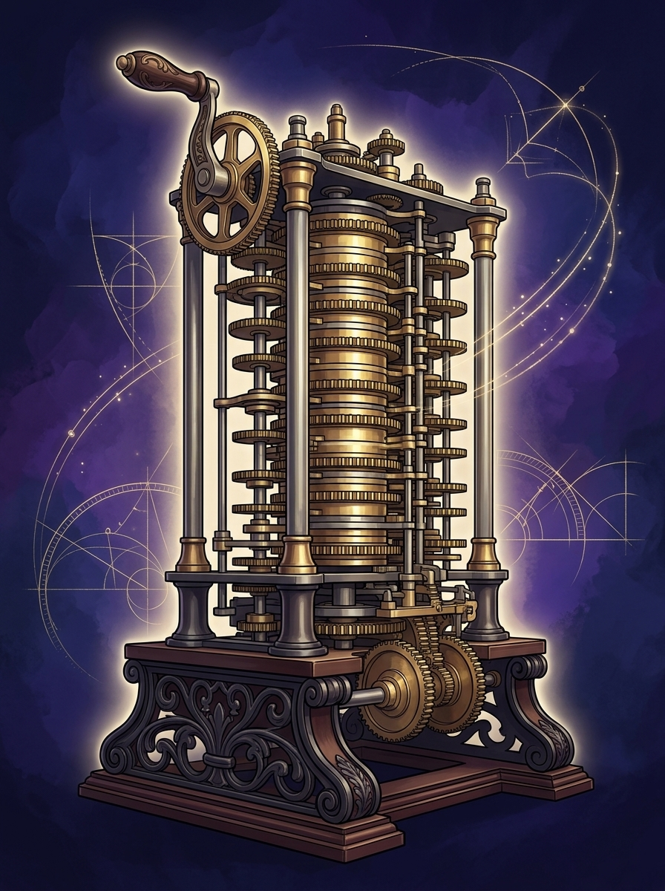
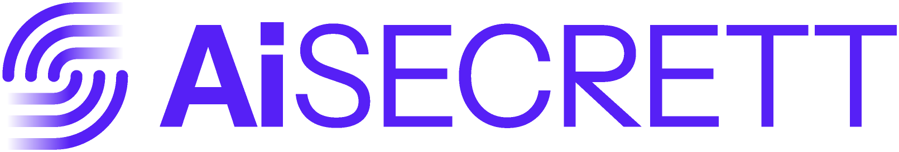
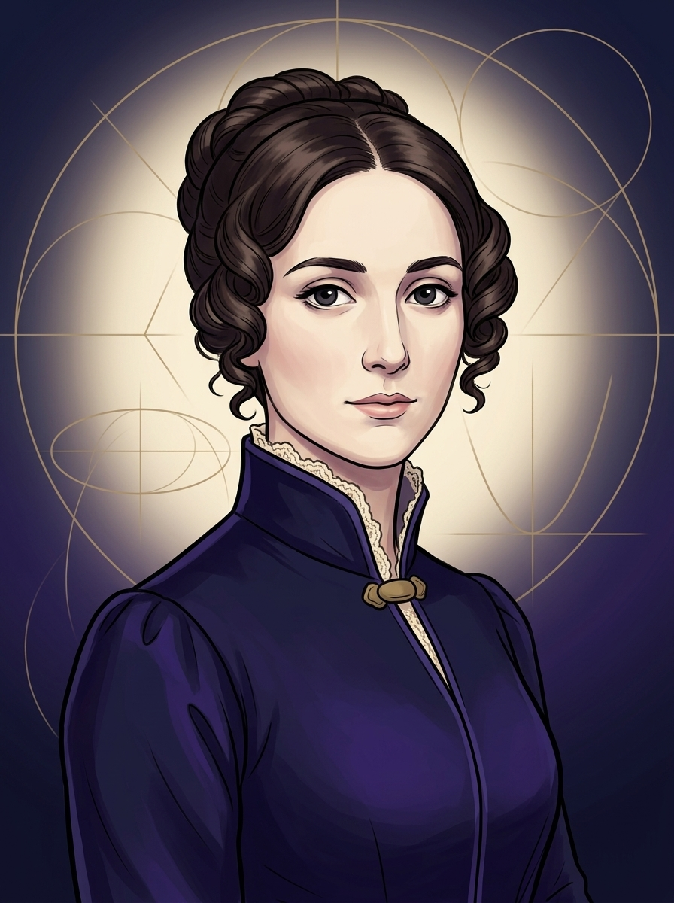
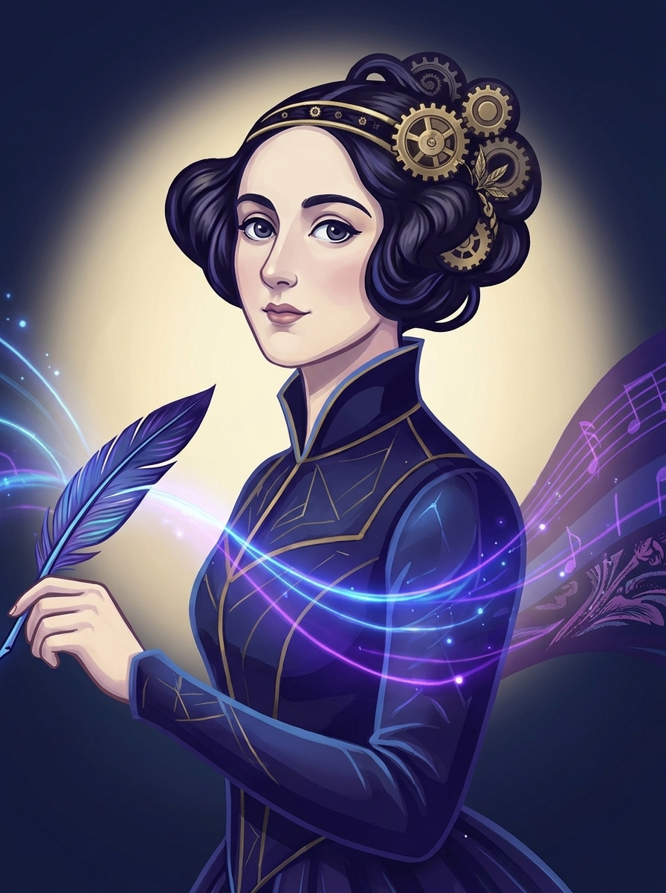
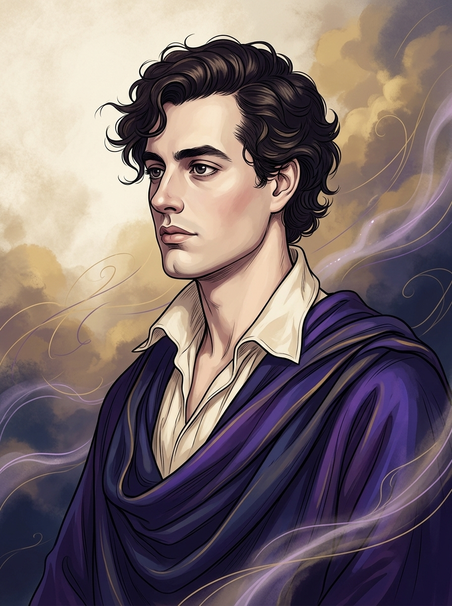
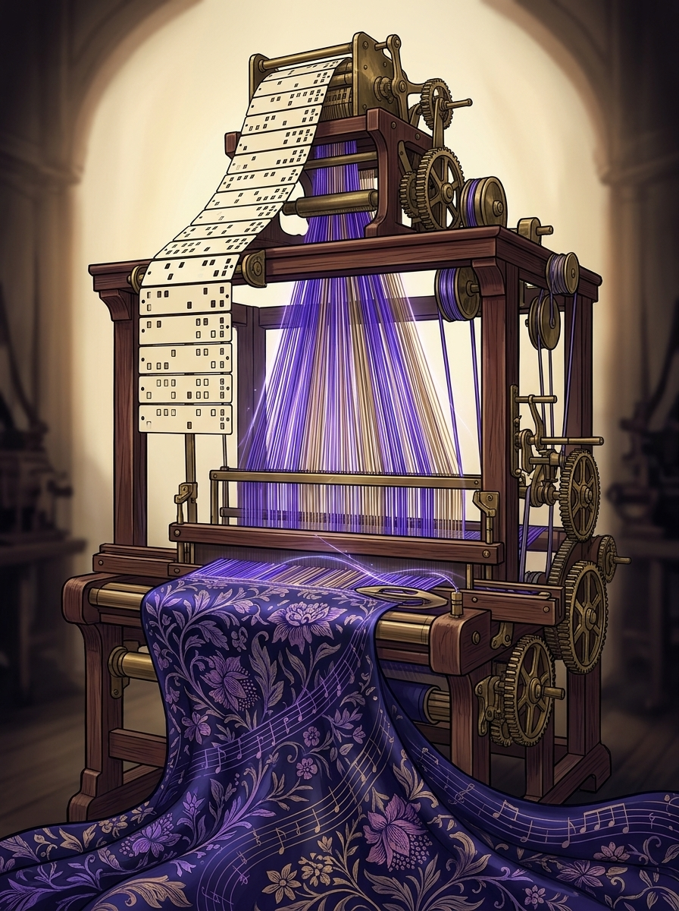

Motor mecánico
Charles Babbage
Cálculo numérico
Concibe la Máquina Analítica para automatizar operaciones aritméticas y tablas matemáticas con precisión mecánica.


Matemáticas y rigor

Ciencia Poética

Poesía e imaginación

Cálculo numérico
Concibe la Máquina Analítica para automatizar operaciones aritméticas y tablas matemáticas con precisión mecánica.

Símbolos, música y cultura
Comprende que la máquina puede manipular cualquier símbolo sujeto a reglas: partituras, lenguaje, tejido y creación humana.
«La máquina genera la respuesta técnica; la persona sostiene la intención, el propósito y el sentido.»
El «cómo»: capacidad de cálculo, algoritmos y robustez técnica.
Infraestructura: la herramienta que procesa y ejecuta.
El «para quién» (Problem framing): definir qué retos merecen resolverse.
El «por qué» (Juicio crítico): validar el sentido ético y social del resultado.
«El algoritmo genera respuestas y trazos técnicos; solo la mirada humana decide el propósito, aporta la autoría y valida críticamente el resultado.»
Conectando necesidades reales con soluciones humanas con IA.
Estudiantes y docentes resolviendo retos con IA ética y creatividad.
Necesidades reales del mercado transformadas en proyectos de aula.
Iniciativa europea (AiSECRETT)
Asociaciones, colectivos y personas que definen el impacto social y la inclusión.
Impulso institucional, supervisión ética y transferencia abierta de la innovación.
Necesidades reales planteadas por centros, administraciones, empresas o entidades sociales.
Experimentación colaborativa en aulas y entornos reales con datos seguros y Learning by Developing.
Acompañamiento experto en ética, metodología STEAM y diseño humano-IA en todo el recorrido, respaldado por las 8 universidades.
Experiencias documentadas, reproducibles y abiertas para inspirar a otros centros y territorios.
Contraste y evaluación participativa entre pares antes de su apertura pública al resto de Europa.
Voz única → Autonomía comunicativa en tiempo real
Reentrenaron el modelo Whisper con fonemas propios para traducir en tiempo real el habla de personas con parálisis cerebral, disartria o disfasia.
La tecnología solo cobra sentido cuando teje comunidad. Súmate con un reto, un piloto o una mentoría conectada con las 8 universidades europeas del consorcio.
Repositorio abierto de casos, sectores productivos y dinámicas de la Comunidad de Práctica.
Marco del proyecto europeo, formación académica (Track A) y consorcio de 23 socios en 12 países.
Canal directo para adhesiones, mentorías, propuestas de retos y coordinación institucional.